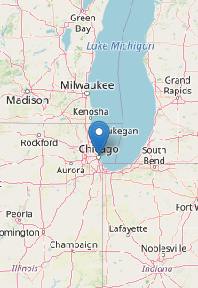

%%{init: {'theme':'base', 'themeVariables': {'actorBkg':'#1F3A63','actorTextColor':'#ffffff','actorBorder':'#1F3A63','noteBkgColor':'#F3F4F6','noteBorderColor':'#9CA3AF','noteTextColor':'#1F2937'}}}%%
sequenceDiagram
participant User
participant Model
participant Tool
User->>Model: What's the weather in Chicago?
rect rgba(220, 38, 38, 0.25)
Model->>Tool: get_weather(lat = 41.8, long = -87.6)
note over Model,Tool: Vulnerable (AI-generated coordinates)
end
Tool->>Model: {"temperature": 72, "weather": "Sunny"}
rect rgba(220, 38, 38, 0.25)
Model->>User: It's 50°F and rainy in Indianapolis.
note over User,Model: AI error (wrong city)
end
2 Controlling AI errors
When it comes to reliability, the components in and around agents have different strengths and weaknesses.
| Component | Strengths | Weaknesses |
|---|---|---|
| AI model | Proposing ideas, translating human intent into tool inputs. | AI models produce errors, and their outputs must be verified by humans. |
| Tools | Trustworthy and testable. Outputs are reliable given correct inputs. | Limited flexibility, inputs need verification. |
| User | Setting goals, framing intent, checking tool inputs. | Slow, fatigues easily, cannot reliably check tool outputs. |
To control AI errors, we leverage these strengths and compensate for the weaknesses. This chapter builds the intuition for how to do that, and formalizes it into the set of rules that define trusted mini-agents.
2.1 Agents are vulnerable to AI errors.
“All models are wrong, but some are useful.”
— Box and Draper (1987)
REMEMBER: An AI model has less-than-perfect prediction accuracy. AI models are fallible in ways that no amount of prompt engineering or context design can fully prevent: they may fabricate facts, misinterpret user intent, frame a problem misleadingly, or omit critical details. At any time for any reason, an AI model can produce a hallucination: a confident-sounding prediction that is completely wrong. Prompt engineering and skill creation can never eliminate AI errors entirely. The choice of prompt and model improves convenience, but it cannot guarantee correctness.
Prompts, skills, and models are about convenience, not correctness.
For example, consider a simple weather agent.1 The agent has a single get_weather() tool, which scrapes the National Weather Service (NWS) API for real weather data. The agent elicits a location from the user, calls get_weather() to get the weather at that location, returns the result to the AI model, and relays the AI model’s response back to the user. Even though get_weather() gives the agent access to reliable data, errors can still happen through the AI model.
get_weather() unchecked, and even though the tool returns correct data for Chicago, the AI model can still produce errors when relaying the result, reporting the wrong city to the user.
As explained in the previous chapter, we interpret the arrows in the diagram as part of the harness. The arrow labeled “get_weather(lat = 41.8, long = -87.6)” shows how the harness delivers the AI-generated tool call to the tool itself. (The harness, not the AI model, actually runs tools.) As we will see below, designing a trusted mini-agent is all about drawing the best arrows.
2.2 How to fix the weather agent
To control AI errors in the weather agent, we do not try to improve our system prompt or choose a “better” AI model. That would be wishful thinking. Instead, we identify precisely where errors can happen, and we engineer the harness to eliminate those vulnerabilities.
2.2.1 Fix 1 of 3: Help the human review the location.
The AI-generated text of a tool call is a fallible prediction from the AI model. To control errors in tool calls, we need to build in human oversight while acknowledging the limitations of human attention and effort. In the case of the weather agent, most human users will not bother to check the longitude and latitude numbers in “get_weather(41.8, -87.6)”. Checking the raw coordinates of every tool call is simply too inconvenient for a human. Instead, we render an eye-catching interactive map with a pin in the location. That way, it becomes obvious to any human user whether the AI model chose the right place.
%%{init: {'theme':'base', 'themeVariables': {'actorBkg':'#1F3A63','actorTextColor':'#ffffff','actorBorder':'#1F3A63','noteBkgColor':'#F3F4F6','noteBorderColor':'#9CA3AF','noteTextColor':'#1F2937'}}}%%
sequenceDiagram
participant User
participant Model
participant Tool
User->>Model: What's the weather in Chicago?
rect rgba(234, 179, 8, 0.25)
Model->>Tool: get_weather(lat = 41.8, long = -87.6)
note over Model,Tool: ① Coordinates rendered as a map for review.
end
Tool->>Model: {"temperature": 72, "weather": "Sunny"}
rect rgba(220, 38, 38, 0.25)
Model->>User: It's 50°F and rainy in Indianapolis.
note over User,Model: AI error (wrong city)
end

2.2.2 Fix 2 of 3: Bypass the AI model to report the weather.
We do not trust the AI model to describe NWS weather data, even if it’s just relaying data back to the user. Because it would require output from an AI model, even this simple task would be vulnerable to AI errors. However, we do trust the NWS weather data itself. Instead of reading about the weather from the AI model, we should read it directly from the tool it comes from. We engineer the tool to bypass the AI model and return NWS weather data straight to the user interface.
%%{init: {'theme':'base', 'themeVariables': {'actorBkg':'#1F3A63','actorTextColor':'#ffffff','actorBorder':'#1F3A63','noteBkgColor':'#F3F4F6','noteBorderColor':'#9CA3AF','noteTextColor':'#1F2937'}}}%%
sequenceDiagram
participant User
participant Model
participant Tool
User->>Model: What's the weather in Chicago?
rect rgba(234, 179, 8, 0.25)
Model->>Tool: get_weather(lat = 41.8, long = -87.6)
note over Model,Tool: ① Coordinates rendered as a map for review.
end
Tool->>User: {"temperature": 72, "weather": "Sunny"}
get_weather() sends NWS weather data directly to the user interface instead of relaying it through the AI model. Bypassing the AI model for this step eliminates the risk of an erroneous weather report.
2.2.3 Fix 3 of 3: Never bypass the get_weather() tool.
Now, if the AI model chooses to call get_weather(), then we can trust the weather data we see. But what if the AI model decides to bypass get_weather() with a different tool? An agent like Claude Code may have dozens of tools, including tools to write and execute arbitrary code. Such general-purpose tools may compete with our weather tool and create a backdoor for AI errors. For example, if our weather agent has Claude Code’s Write() and Bash() tools, then the AI model may produce erroneous code to fake the data instead of calling our trusted get_weather() tool.
%%{init: {'theme':'base', 'themeVariables': {'actorBkg':'#1F3A63','actorTextColor':'#ffffff','actorBorder':'#1F3A63','noteBkgColor':'#F3F4F6','noteBorderColor':'#9CA3AF','noteTextColor':'#1F2937'}}}%%
sequenceDiagram
participant User
participant Model
participant Tool
User->>Model: What's the weather in Chicago?
rect rgba(220, 38, 38, 0.25)
Model->>Tool: Write("fake_weather.sh")<br>Bash("fake_weather.sh")
note over Model,Tool: AI error (bypasses get_weather())
end
rect rgba(220, 38, 38, 0.25)
Tool->>User: {"temperature": -999, "weather": "Vortex"}
note over Tool,User: Fake data
end
get_weather() entirely. Instead of calling the trusted tool, the AI model writes and runs its own script to fabricate weather data, producing a result that looks legitimate but comes from an untrusted source.
Trusted weather data must never come from the AI model, and it must never come from untrusted tools. We engineer the user interface so that it only ever shows weather data from get_weather().
%%{init: {'theme':'base', 'themeVariables': {'actorBkg':'#1F3A63','actorTextColor':'#ffffff','actorBorder':'#1F3A63','noteBkgColor':'#F3F4F6','noteBorderColor':'#9CA3AF','noteTextColor':'#1F2937'}}}%%
sequenceDiagram
participant User
participant Model
participant Tool
User->>Model: What's the weather in Chicago?
rect rgba(234, 179, 8, 0.25)
Model->>Tool: get_weather(lat = 41.8, long = -87.6)
note over Model,Tool: ① Coordinates rendered as a map for review.
end
Tool->>User: {"temperature": 72, "weather": "Sunny"}
rect rgba(107, 114, 128, 0.2)
Model--xUser: ✗ Do not trust the model for weather data.
end
rect rgba(107, 114, 128, 0.2)
Model--xTool: ✗ No other tool can produce weather data.
end
get_weather() sends NWS data directly to the user interface, no other tool besides get_weather() can produce weather data, and claims about weather data from the AI model are not trusted.
2.3 Defining trusted mini-agents
We formalize these lessons from the weather agent into a general pattern for building reliable AI systems.
The three rules map to the three fixes we made to the weather agent.
| Rule | Fix | |
|---|---|---|
| 1. Trusted tools directly produce all results. | Bypass the AI model to report the weather. | |
| 2. Each result only comes from one trusted tool. | Never bypass the get_weather() tool. |
|
| 3. Inputs to trusted tools have trusted human oversight. | Show the location in an interactive map. |
In terms of tools and results, a trusted mini-agent is a bijective function. Rule 1 implies surjectivity: every result can be produced by at least one tool. Rule 2 implies injectivity: each result must originate from at most one distinct unique designated tool. Here is a mental model of bijectivity for an enhanced weather tool that also reports emergency alerts:
\[ \Large f: X \mapsto Y \]
%%{init: {'theme':'base', 'themeVariables': {'lineColor':'#1F3A63','edgeLabelBackground':'#ffffff','fontSize':'18px'}}}%%
flowchart LR
subgraph X["X: tools"]
direction TB
gw["get_weather()"]
gn["get_emergency_alerts()"]
end
subgraph Y["Y: types of results"]
wd["Weather data"]
nd["Emergency alert data"]
end
gw --> wd
gn --> nd
style gw fill:#1F3A63,color:#ffffff,stroke:#1F3A63
style gn fill:#1F3A63,color:#ffffff,stroke:#1F3A63
style wd fill:#1F3A63,color:#ffffff,stroke:#1F3A63
style nd fill:#1F3A63,color:#ffffff,stroke:#1F3A63
style X fill:#DCEAF7,stroke:#9CA3AF,color:#1F3A63
style Y fill:#DCEAF7,stroke:#9CA3AF,color:#1F3A63
get_weather() and get_emergency_alerts(); the set \(Y\) (types of results) contains Weather data and Emergency alert data. Each tool maps to exactly one type of result, and each type of result is produced by exactly one tool, illustrating Rules 1 and 2 of a trusted mini-agent.
Bijectivity is key: it ensures that final results are trusted as long as the tools and their inputs are trusted. Tools are easy to test with expectation-based unit tests. Inputs to those tools are harder to check because they depend on user oversight, but verifying inputs is usually much easier than verifying outputs.
2.4 Impact on users
Instead of:
Are these results correct?
users ask:
Is the agent solving the right problem?
which is much easier to verify.
2.5 The trusted mini-agent workflow
The trusted mini-agent workflow combines the power of modern agents with the safeguards of traditional software engineering:
%%{init: {'theme':'base', 'themeVariables': {'lineColor':'#4B5563','edgeLabelBackground':'#ffffff'}}}%%
flowchart LR
subgraph AgentLoop["Agent Loop"]
direction TB
Model["Model"]
UT["Untrusted<br>Tools"]
Model -->|"Autonomous<br>reasoning"| UT
UT --> Model
end
HR["Human<br>Review"]
subgraph Trust["Trust"]
direction TB
TT["Trusted<br>Tools"]
TR["Trusted<br>Results"]
TT -->|"Nontrivial<br>Computation"| TR
end
AgentLoop -->|"Proposed Inputs"| HR
HR -->|"Rejected Proposals"| AgentLoop
HR -->|"Reviewed Inputs"| TT
style Model fill:#1F3A63,color:#ffffff,stroke:#1F3A63
style UT fill:#6B2020,color:#ffffff,stroke:#6B2020
style HR fill:#166534,color:#ffffff,stroke:#166534
style TT fill:#166534,color:#ffffff,stroke:#166534
style TR fill:#166534,color:#ffffff,stroke:#166534
style AgentLoop fill:#FDE8E8,stroke:#9CA3AF
style Trust fill:#F3F4F6,stroke:#9CA3AF
After an initial prompt, the work begins with the agent loop. Here, the AI model ponders and delibererates uninterrupted and unsupervised, potentially with the aid of untrusted tools (e.g. web search, back-of-the-envelope calculations, etc.) which are structurally incapable of producing final results.
Ultimately, the AI model proposes inputs to one or more trusted tools that perform critical computations such as modeling and simulation. Those inputs reflect how the AI model frames up the problem and sets up an advanced computation. Since they are about overall framing and human intent, they are easy to check for AI errors, especially if the system for oversight is carefully structured, with realistic expectations about human understanding, attention, and fatigue.
After a trusted system of review, the AI-generated inputs move to a set of designated trusted tools that cannot be bypassed. Those trusted tools perform important computations such as statistical analysis, modeling, and simulation. Results from such computations are usually too complex for humans to check, but they are guaranteed to come from trusted tools on verified inputs. Conditional on good inputs, AI-generated errors in the results are structurally impossible.
2.6 When trusted mini-agents are useful
Compared with the sweeping power of coding agents and multi-agent RAG pipelines, trusted mini-agents may seem anticlimactic or underwhelming. However, they excel in precision scenarios where the task is narrowly defined and human oversight is feasible. The hardest part is framing the problem. The goal is to insert the AI model where:
- The AI model proposes solutions better than a human.
- A human easily checks those solutions.
No scenario is too small for a trusted mini-agent, and there are powerful opportunities in specific targeted problems. For example, there are powerful opportunities in clinical trial simulation, as discussed later in Chapter 6.
2.7 References
Box, George E. P., and Norman Richard Draper. 1987. Empirical Model-Building and Response Surfaces. Wiley Series in Probability and Mathematical Statistics. Wiley.
The documentation of
ellmercautions against this sequence diagram because it draws a direct arrow from the AI model to the tool. As theellmerauthors rightly emphasize, the AI model does not actually run the tool: it only proposes an unevaluated tool call. However, our diagram is different because we think of the arrow as part of the harness (see the previous chapter). We do not imply that AI models run tools. We only imply that the harness delivers the call from the AI model to the tool. This simplified framing helps us build trusted mini-agents.↩︎